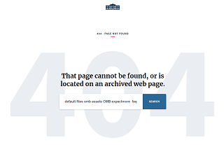

ホワイトハウスがWordPressに移行か？
ホワイトハウスの公式サイト「www.whitehouse.gov」がCMSをDrupalからWordPressに移行したもようです。
理由は不明ですが、インデックス数が「約 33,700 件」ぐらいあるようなので、サイト管理のしやすいWordPressに移行したのかもしれません。
ホワイトハウスのサイトは政権ごとに分かれているようで、オバマ政権時のページは「obamawhitehouse.archives.gov」へリダイレクトされているケースも多いです。ところどころで404が返ってくるページもあり、対応しきれない面もあるのかなという印象があります。

今後もページ数が増えていくことを考えて、複数のユーザーで管理しやすいWordPressへ移行したのではないかと思われます。（詳細不明）
現在のところ、WordPressのシェアはサイト全体の約３割程度と言われていますが、CMSのなかでは約５割～６割程度のシェアがあります。他にもJoomla、DrupalなどのCMSもありますが、ユーザー数的にはWordPress以外はたいした差がないかもしれません。
個人的には静的に出力されるMTOSやDreamweaverを使用していますが、これからサイトをはじめようとされる方はユーザー数の多いWordPressを利用した方が何かとメリットが多いものと思われます。レンタルサーバーなどもWordPress専用のサーバーが多いですし、テンプレートやプラグインについてもWordPressの方が充実しています。
今回ホワイトハウスがWordPressに移行したことを受け、今年はWordPressユーザー数もさらに増えていくのではないかと思いますが、ネット上で似たようなテンプレートのサイトが多くなってしまうのには多少の違和感を感じています。